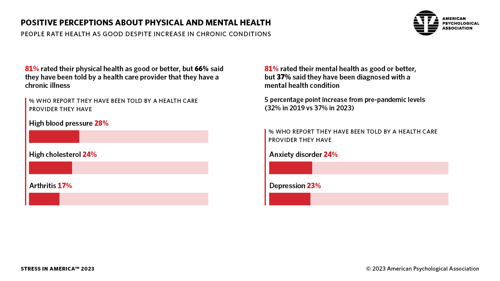

What is Mental Health?*
"Mental health includes our emotional, psychological, and social well-being. It affects how we think, feel, and act, and helps determine how we handle stress, relate to others, and make choices." - SAMHSA
Types of Mental Disorders**
Anxiety Disorders
Symptoms
Tiredness, Muscle tension, Stomachache, Chest tightness or pain, Fear of being embarrassed, Blushing, Sweating, Trembling, Shortness of breath, Rapid heartbeat, Headache, Dizziness
Causes
Genetics, Stress, Environment, Chemical imbalances in the brain
Types
Generalized anxiety disorder, Panic disorder, Social anxiety disorder
Mood Disorders
Symptoms
Feelings hopeless or helpless, Difficulty sleeping or daytime sleepiness, Loss of appetite or binge eating, Poor concentration, Fatigue or low energy, Low self-esteem, Trouble making decisions, Feeling ecstatic, high, or elated for no reason, Feeling jumpy and being more active than usual, Being short-tempered, Racing thoughts and talking very fast, Needing less sleep
Causes
Genetics, Chronic stress, Mental illness, Isolation, Poor coping strategies
Types
Bipolar disorder, Depression, Cyclothymic disorder
Psychotic Disorders
Symptoms
Hallucinations, Delusions, Disorganized thoughts or speech, Lack of emotion and/or changes in facial expression, Difficulty understanding speech or other forms of communication, Difficulty making sense of new information, Difficulty solving problems, Anxiety, Depression, Lack of interest in spending time with people or having fun, Minimal movement or talking, Poor hygiene, Problems learning and remembering
Causes
Stress, Drug abuse, Major life changes, Family history, Chemical (glutamate) imbalance in the brain
Types
Schizophrenia, Schizoaffective disorder, Schizophreniform disorder
Eating Disorders
Symptoms
Dramatic weight loss, Exercising excessively, Refusal to eat certain foods, Avoiding mealtimes or eating in front of others, Complaining about constipation or stomach pain, Constant dieting, Complaining about being fat, Wearing baggy clothes to hide the body, Hiding food in strange places
Causes
Genetic, Biological, Behavioral, Psychological, Social
Types
Anorexia nervosa, Bulimia nervosa, Binge eating
Personality Disorders
Symptoms
Social anxiety that causes difficulty making friends, Desiring constant attention, Lack of impulse control or difficulty delaying gratification, Inability to realize or admit their faults (ego-syntonic symptoms), Blaming others for their behaviors and feelings, Feeling of being cheated or exploited, Mood swings, Angry outbursts
Causes
Genetics, Childhood trauma
Types
Borderline personality disorder, Narcissistic personality disorder, Antisocial personality disorder
Post-Traumatic Stress Disorder (PTSD)
Symptoms
Reliving the trauma including memories, nightmares or flashbacks, Feeling “numb”, Trouble sleeping, Avoiding certain people or places, Intense feelings such as anger, fear or worry
Causes
Sexual assault, Physical assault, Natural disaster, Death of a loved one
Types
Simple PTSD, Complex PTSD, Comorbid PTSD
Impulse Control and Addiction Disorders
Symptoms
Hair pulling, Stealing, Compulsive lying, Poor social skills, Ignoring responsibilities and relationships, Being aggressive toward animals, Destroying the property of others, Starting fires, Violating rules such as running away or skipping school at an early age
Causes
History of physical or emotional trauma, Problems with emotional regulation, Neglectful or abusive parenting, Exposure to violence
Types
Pyromania, Kleptomania, Compulsive gambling, Substance abuse
Factitious Disorders
Symptoms
Abdominal pain, Arthralgia (joint pain), Chest pain, Diarrhea, Infections, Hypoglycemia (low blood glucose level), Hematuria (blood in the urine), Hyperthyroidism, Skin wounds that do not heal, Vomiting, Weakness
Causes
History of child abuse or neglect, History of illnesses that requires the individual to visit hospitals, Trauma, Family dysfunction, Social isolation, Early chronic medical illness, Depression, Low self-esteem, Work in the healthcare field, Loss of a loved one through death
Types
Factitious disorder with mostly psychological symptoms, Factitious disorder with mostly physical symptoms, Factitious disorder with both psychological and physical symptoms, Factitious disorder not otherwise specified
Obsessive-Compulsive Disorder (OCD)
Symptoms
Repetitive and persistent thoughts, Repetitive behaviors such as washing hands or changing clothes too frequently, Feeling overly stressed when there is any change in routine, Excessive fear of germs or dirt, Repeatedly counting or checking things
Causes
Genetics, Stress, Trauma, Pregnancy, Age
Types
Contamination obsessions, Harm obsessions with checking compulsions (fear-of-harm thoughts, taboo thoughts), Symmetry obsessions
Sexual and Gender Disorders
Symptoms
Conflict between gender assigned at birth and gender identity, Sexual urges relating to objects, Inhibited sexual desire, Avoiding sexual opportunities for fear of failure
Causes
Chromosomal abnormalities, Hormonal abnormalities, Exposure to certain hormones before birth, Congenital adrenal hyperplasia
Types
Sexual dysfunction, Gender identity disorder, Paraphilias
Myth Busters
MYTH: Mental health issues can't affect me.
Mental health issues can affect anyone!
Myth: People with mental health conditions are violent.
Most people with mental health conditions are no more likely to be violent than anyone else.
Myth: I can't do anything for a person with a mental health problem.
Friends and loved ones can make a big difference, and can be important influences to help someone get the treatment and services they need.